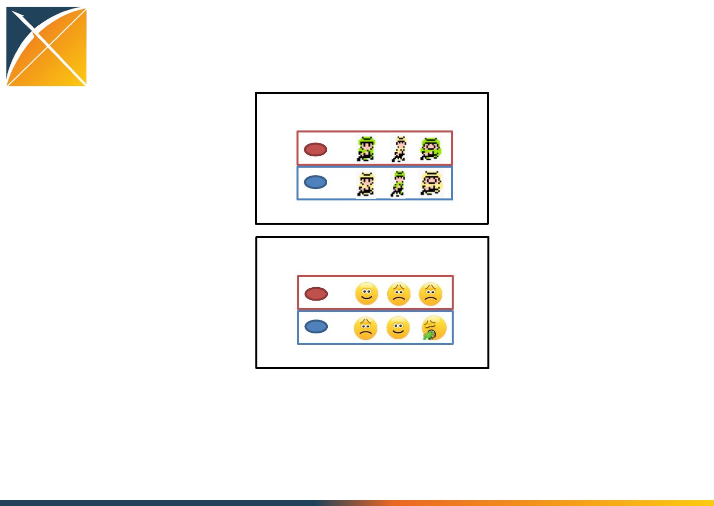

OHDSI Tutorial: Design and
implementation of a
comparative cohort study in
observational healthcare data
Faculty:
Martijn Schuemie (Janssen Research and Development)
Marc Suchard (UCLA)
Patrick Ryan (Janssen Research and Development)
David Madigan (Columbia)
Today’s Agenda
Time Statistical programmer track Study designer track
8:00am-8:30am Welcome, get settled, get laptops ready
8:30am-9:30am Presentation: Overview of the new-user cohort method design, large scale
propensity scores and outcome models
9:30am-10:30am Exercise: Dissect a published cohort study
(team of 4: 2 statistical programmers + 2 study designers)
10:30am-10:45am Break
10:45am-11:45am Presentation: Walkthrough of implementing a cohort study using OHDSI tools
11:45am-12:30pm Lunch, stay here Lunch, switch rooms
12:30pm-2:30pm Exercise: Deep dive into cohort
study implementation using the
CohortMethod R package
-learn the functions contained in the
R package
- Implement the study execution
process for a published cohort study
-review study output and interpret
results
Exercise: Deep dive into cohort study
design, using ATLAS
-Learn to create cohort definitions
for treatment cohort, comparator
group, and outcome
-Review study design decisions
required within CohortMethod R
package
-Implement the study design
process for a published cohort
study
2:30pm-2:45pm Break, stay here Break, return to main room
2:45pm-4:30pm Exercise: Collaborate on the design and implementation of your own cohort
study
(statistical programmer + study designer pairs work together)
4:30pm-5:00pm Team progress reports and wrap up

Overview of the new-user
cohort method design, large
scale propensity scores and
outcome models

OHDSI’s mission
To improve health, by empowering a community
to collaboratively generate the evidence that
promotes better health decisions and better
care.

What evidence does OHDSI seek to
generate from observational data?
•Clinical characterization
–Natural history: Who are the patients who have diabetes? Among
those patients, who takes metformin?
–Quality improvement: what proportion of patients with diabetes
experience disease-related complications?
•Population-level estimation
–Safety surveillance: Does metformin cause lactic acidosis?
–Comparative effectiveness: Does metformin cause lactic acidosis
more than glyburide?
•Patient-level prediction
–Precision medicine: Given everything you know about me and my
medical history, if I start taking metformin, what is the chance that I
am going to have lactic acidosis in the next year?
–Disease interception: Given everything you know about me, what is
the chance I will develop diabetes?

What is OHDSI’s strategy to deliver
reliable evidence?
•Methodological research
–Develop new approaches to observational data analysis
–Evaluate the performance of new and existing methods
–Establish empirically-based scientific best practices
•Open-source analytics development
–Design tools for data transformation and standardization
–Implement statistical methods for large-scale analytics
–Build interactive visualization for evidence exploration
•Clinical evidence generation
–Identify clinically-relevant questions that require real-world evidence
–Execute research studies by applying scientific best practices through
open-source tools across the OHDSI international data network
–Promote open-science strategies for transparent study design and
evidence dissemination
A standardized process for evidence
generation and dissemination
Open-source knowledgebase
(LAERTES)
Open-source front-end web
applications (ATLAS)
Open-source back-end
statistical packages
(R Methods Library)
How OHDSI is trying to help:
OHDSI network studies
OHDSI community
1. Question
2. Review
3. Design
5. Execute
6. Evaluate
4.
Publish
Protocol
7. Synthesize
A pop culture mash-up to explain
counterfactual reasoning…
Counterfactual reasoning for one person
Decision
Person Time
0
Baseline:
Period to satisfy
inclusion criteria
Follow-up:
Period to observe
outcomes
Counterfactual reasoning for a population
Cohort summary
Outcome summary

Alas, we don’t have a Delorean…
•What is our next best approximation?
•Instead of studying the same population
under both decision options, let’s define a
larger population and randomly assign one
treatment to each person, then compare
outcomes between the two cohorts…
Randomized treatment assignment to
approximate counterfactual outcomes
Assigned
Unobserved
Assigned
Unobserved
Assigned
Unobserved
Unobserved
Assigned
Unobserved
Assigned
Unobserved
Assigned

•Randomization allows for assumption that persons
assigned to target cohort are exchangeable at baseline
with persons assigned to comparator cohort
Outcome summary
Cohort summary

Alas, we can’t randomize…
•What is our next, next best approximation?
•Define a larger population, observe the
treatment choices that were made, then
compare outcomes:
–Between persons who made different choices
(comparative cohort design)
OR
–Within persons during time periods with different
exposure status (self-controlled designs)

How does Epidemiology define a
comparative cohort study?
…it depends on what Epidemiology textbook you read…
“In a retrospective cohort study…the investigator identified the cohort of
individuals based on their characteristics in the past and then reconstructs
their subsequent disease experience up to some defined point in the most
recent past or up to the present time”
--Kelsey et al, Methods in Observational Epidemiology, 1996
“In a cohort study, a group of people (a cohort) is assembled, none of whom
has experienced the outcome of interest, but all of whom could experience
it…On entry to the study, people in the cohort are classified according to those
characteristics (possible risk factors) that might be related to outcome. These
people are then observed over time to see which of them experience the
outcome.”
--Fletcher, Fletcher and Wagner, Clincal Epidemiology – The
Essentials, 1996
“In the cohort study’s most representative format, a defined population is
identified. Its subjects are classified according to exposure status, and the
incidence of the disease (or any other health outcome of interest) is
ascertained and compared across exposure categories.”
--Szklo and Nieto, Epidemiology: Beyond the Basics, 2007
“In the paradigmatic cohort study, the investigator defines two or more groups
of people that are free of disease and that differ according to the extent of
their exposure to a potential cause of disease. These groups are referred to as
the study cohorts. When two groups are studies, one is usually though of as
the exposed or index cohort – those individuals who have experienced the
putative causal event or condition – and the other is then thought of as the
unexposed or reference cohort.”
--Rothman, Modern Epidemiology, 2008
“Cohort studies are studies that identify subsets of a defined population and
follow them over time, looking for differences in their outcome. Cohort
studies generally compare exposed patients to unexposed patients, although
they can also be used to compare one exposure to another.”
--Strom, Pharmacoepidemiology, 2005
An observational comparative cohort design to
approximate counterfactual outcomes
Observed
Unobserved
Observed
Unobserved
Observed
Unobserved
Unobserved
Observed
Unobserved
Observed
Unobserved
Observed
Observed
Unobserved
Observed
Unobserved
Unobserved
Observed
Unobserved
Observed
Outcome summary
Cohort summary
•Exchangeability assumption may be violated if there is
reason for treatment choice...and there often is

Propensity score introduction
•e(x) = Pr(Z=1|x)
–Z is treatment assignment
–x is a set of all covariates at the time of treatment
assignment
•Propensity score = probability of belonging to the
target cohort vs. the comparator cohort, given the
baseline covariates
•Propensity score can be used as a ‘balancing score’: if
the two cohorts have similar propensity score
distribution, then the distribution of covariates should
be the similar (need to perform diagnostic to check)
Rubin Biometrika 1983
Intuition around propensity score
balance
Schneeweiss. PDS 2011

“Five reasons to use propensity score in
pharmacoepidemiology”
•Theoretical advantages
–Confounding by indication is the primary threat to validity, PS focuses
directly on indications for use and non-use of drug under study
•Value of propensity scores for matching or trimming the population
–Eliminate ‘uncomparable’ controls without assumptions of linear
relationship between PS and outcome
•Improved estimation with few outcomes
–PS allows matching on one scalar value rather than needing degrees of
freedom for all covariates
•Propensity score by treatment interactions
–PS enables exploration of patient-level heterogeneity in response
•Propensity score calibration to correct for measurement error
Glynn et al, BCPT 2006
Methods for confounding adjustment
using a propensity score
Garbe et al, Eur J Clin Pharmacol 2013, http://www.ncbi.nlm.nih.gov/pubmed/22763756
Fully implemented in OHDSI
CohortMethod R package
Not generally recommended
Matching as a strategy to adjust for baseline
covariate imbalance
Observed
Unobserved
Observed
Unobserved
Observed
Unobserved
Unobserved
Observed
Unobserved
Observed
Unobserved
Observed
Observed
Unobserved
Observed
Unobserved
Unobserved
Observed
Unobserved
Observed
Cohort summary
Stratification as a strategy to adjust for baseline
covariate imbalance
Observed
Unobserved
Observed
Unobserved
Observed
Unobserved
Unobserved
Observed
Unobserved
Observed
Unobserved
Observed
Observed
Unobserved
Observed
Unobserved
Unobserved
Observed
Unobserved
Observed
Strata 1:
Large
Strata 3:
Small
Strata 2:
Medium
Cohort summary
Cohort summary
Conclusion: The new user cohort method can contribute useful
information toward a risk identification system, but should not be
considered definitive evidence given the degree of error observed within
effect estimates.
Careful consideration of the comparator selection and appropriate
calibration of the effect estimates is required in order to properly interpret
findings.
OHDSI’s definition of ‘cohort’
Cohort = a set of persons who satisfy one or
more inclusion criteria for a duration of time
Objective consequences based on this cohort definition:
•One person may belong to multiple cohorts
•One person may belong to the same cohort at multiple different time
periods
•One person may not belong to the same cohort multiple times during
the same period of time
•One cohort may have zero or more members
•A codeset is NOT a cohort…
…logic for how to use the codeset in a criteria is required
Process flow for formally defining a
cohort in ATLAS
•Cohort entry criteria
–Initial events
•Events are recorded time-stamped observations for the
persons, such as drug exposures, conditions,
procedures, measurements and visits.
•All events have a start date and end date, though some
events may have a start date and end date with the
same value (such as procedures or measurements).
–Initial event inclusion criteria
–Additional qualifying inclusion criteria
•The qualifying cohort will be defined as all persons who
have an initial event, satisfy the initial event inclusion
criteria, and fulfill all additional qualifying inclusion
criteria.
•Each qualifying inclusion criteria will be evaluated to
determine the impact of the criteria on the attrition of
persons from the initial cohort.
•Cohort exit criteria
Initial
cohort
Qualifying
cohort
A database is full of cohorts, some of
which may represent valid comparisons
Database cohort
New users of Drug A New users of Drug
B
New users
of Drug C
Incident event of
condition 1
Persons with
surgery E
New users of
Drug F
Users of
C+F
New users of
Device D
Diagnosed
with
condition
2
Had
Outcome
3
What are the key inputs to a comparative cohort
design?
Input parameter Design choice
Target cohort (T)
Comparator cohort (C)
Outcome cohort (O)
Time-at-risk
Model specification
Cohort restriction in comparative
cohort analyses
Initial target cohort T
Qualifying
target cohort
Analytic
target
Cohort (T’)
Initial comparator cohort C
Qualifying
comparator cohort
Analytic
comparator
cohort (C’)
Outcome cohort
Analytic outcome
cohort:
O in T’, C’ during
time-at-risk
The choice of the outcome model
defines your research question
Logistic
regression
Poisson regression Cox proportional
hazards
How the
outcome
cohort is
used
Binary classifier
of presence/
absence of
outcome during
the fixed time-
at-risk period
Count the number of
occurrences of
outcomes during
time-at-risk
Compute time-to-event
from time-at-risk start
until earliest of first
occurrence of outcome
or time-at-risk end, and
track the censoring event
(outcome or no
outcome)
‘Risk’ metric Odds ratio Rate ratio Hazard ratio
Key model
assumptions
Constant
probability in
fixed window
Outcomes follow
Poisson distribution
with constant risk
Proportionality –
constant relative hazard
Design an observational study like you
would a randomized trial
Protocol components to emulate:
•Eligibility criteria
•Treatment strategies
•Assignment procedures
•Follow-up period
•Outcome
•Causal contrasts of interest
•Analysis plan
A standardized process for evidence
generation and dissemination
1. Question
2. Review
3. Design
5. Execute
6. Evaluate
4.
Publish
Protocol
7. Synthesize
A standardized process for evidence
generation and dissemination
1. Question:
•What question is being asked?
•What’s the motivation for asking the question?
•What decision is this evidence trying to inform?
•What are you trying to estimate: effect relative to
counterfactual ‘unexposed’ or effect relative to
alternative treatment?
1. Question
2. Review
3. Design
5. Execute
6. Evaluate
4.
Publish
Protocol
7. Synthesize
A standardized process for evidence
generation and dissemination
2. Review:
•What evidence already exists about this question?
•What are the current evidence gaps?
•Based on this evidence, what is your current belief
about the population-level effect?
1. Question
2. Review
3. Design
5. Execute
6. Evaluate
4.
Publish
Protocol
7. Synthesize
A standardized process for evidence
generation and dissemination
1. Question
2. Review
3. Design
5. Execute
6. Evaluate
4.
Publish
Protocol
7. Synthesize
3. Design:
•Study team must make decisions about pre-
defined inputs to standardized analytics:
•Target cohort
•Comparator cohort
•Outcome
•Time-at-risk
•Model specification
•Decisions require clinical domain knowledge,
experience with the source observational data,
and expertise in statistical modeling
A standardized process for evidence
generation and dissemination
4. Publish Protocol:
•Protocol must provide a full specification of all
design decisions to enable complete
reproducibility
•Publishing protocol with all pre-defined decisions
prior to execution ensures transparency
1. Question
2. Review
3. Design
5. Execute
6. Evaluate
4.
Publish
Protocol
7. Synthesize
A standardized process for evidence
generation and dissemination
5. Execute:
•Generate standardized output based on
community best practices
•source code for transparency and reproducibility
•model diagnostics to evaluate accuracy
•aggregate summary statistics (no patient-level data)
1. Question
2. Review
3. Design
5. Execute
6. Evaluate
4.
Publish
Protocol
7. Synthesize
A standardized process for evidence
generation and dissemination
6. Evaluate:
•What is the systematic error for
the method and data used in
the analysis? (as could be
estimated using negative
controls)
•What is the coverage
probability of the 95%
confidence intervals? (as could
be estimated by generated
positive controls)
1. Question
2. Review
3. Design
5. Execute
6. Evaluate
4.
Publish
Protocol
7. Synthesize
A standardized process for evidence
generation and dissemination
7. Synthesize:
•How does the new evidence
you’ve generated compare with
prior knowledge?
•What is your new belief about
the effect, given your prior
knowledge plus this new
evidence?
1. Question
2. Review
3. Design
5. Execute
6. Evaluate
4.
Publish
Protocol
7. Synthesize
Dissemination via
Publication
A standardized process for evidence
generation and dissemination
Background
Methods
Results
Discussion
1. Question
2. Review
3. Design
5. Execute
6. Evaluate
4.
Publish
Protocol
7. Synthesize
Results

When designing or reviewing a study, ask
yourself:
Input parameter Design choice
Target cohort (T)
Comparator cohort (C)
Outcome cohort (O)
Time-at-risk
Model specification